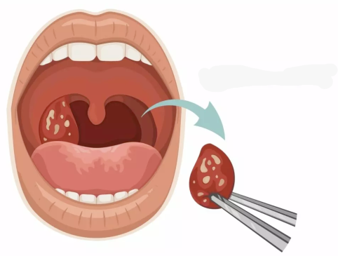

One of the four paired paranasal sinuses, located behind the eyes.
The study and treatment of speech, language, and communication disorders.
Surgical removal of the stapes bone in the middle ear to improve hearing in otosclerosis patients.
The abnormal narrowing of a body passage, such as the airway.
A high-pitched, wheezing sound caused by disrupted airflow, often due to an obstruction in the airway.
Narrowing of the airway below the vocal cords (subglottis), often due to scarring.
Surgical removal of the tonsils, often due to recurrent infections.
Inflammation of the tonsils, usually due to infection, causing sore throat and difficulty swallowing.
The eardrum, a thin membrane that separates the outer ear from the middle ear.
Surgical repair of the tympanic membrane and middle ear structures.
A surgical procedure to remove excess tissue from the throat, often to treat sleep apnea.
A condition where one or both vocal cords do not move properly, affecting voice and breathing.
A benign growth on the vocal cords, often causing hoarseness or voice changes.
Small, benign lumps on the vocal cords, typically caused by voice overuse.
Treatment aimed at improving or restoring the voice, often through vocal exercises.
A quick hearing test using a tuning fork to evaluate hearing loss in one ear.
A pouch that forms at the back of the throat, often causing swallowing difficulties.
The bony arch on the side of the skull that extends from the prominence of the cheek.